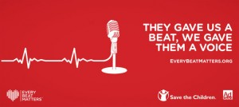
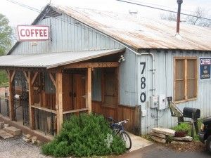

Ra Ra Riot discuss teaming up with Oxfam to fight poverty and hunger around the world
{kind=link}
By Laura Ferreiro
Ra Ra Riot recently embarked on a tour across North America in support of their new album “Beta Love,” and they invited Oxfam America to come along. The New York-based indie rockers have been long-time supporters of the international charity that works to end poverty, hunger and injustice.
Music for Good caught up with Ra Ra Riot violinist Becca Zeller as they were getting ready to hit the road. She explained that after learning about Oxfam from their band manager years ago, Ra Ra Riot decided to invite Oxfam staff and volunteers along to their shows to tell their fans about the important work they do and to recruit more volunteers.
“Having them set up a booth at our shows didn’t seem like it would have that big of an impact, but we heard that people who became interns (for Oxfam) heard about them at our shows and got involved,” Zeller says. “That is the goal but we didn’t realize things would connect so directly!”
Zeller adds that she likes the fact that Oxfam works on so many vital issues. “Something I find appealing is the broad scope because there are so many organizations that are so specific,” she says. “Oxfam is able to do a lot of good in so many places for so many people. They’re able to impact more people’s lives. There are also little things I love about them—like around the holidays, you can buy someone a well or a llama. Little marketing things like that. They use holidays as a time to come up with creative ways that people can see the impact their money is making.”
Bob Ferguson, Oxfam’s Manager of Creative Alliances, says that their relationship with Ra Ra Riot is one of the most special relationships they’ve had with a band.
“Every step of their career they’ve always been thoughtful enough to take us with them,” Ferguson says. “We’ve set up tables at close to 100 gigs of theirs, and they’ve done PSAs for us. We also did a video interview at SXSW and they even mentioned us in their liner notes. I really feel that they inspire my work in ways that go beyond music.”
When Ra Ra Riot was playing shows in the UK, they realized that most people there knew all about Oxfam, whereas in the U.S., the international charity isn’t as much of a household name. “Because we spend a lot of time traveling, we’re exposed to a lot of things,” says Zeller. “It feels good to be able to expose people to things they haven’t heard of, but it’s a power that should be held delicately. Maybe it’ll be slightly more legitimized if our fans know that someone whose music they like and respect supports the organization.”
Click here to learn more about Oxfam America or to volunteer with the Oxfam Action Corps.
Listen to the title track from Ra Ra Riot’s “Beta Love”
One Republic combats child mortality with heartbeats and a catchy tune
{kind=link}
By Laura Ferreiro
Rock band OneRepublic have turned a heartbeat into a backbeat to draw attention to Save the Children’s “Every Beat Matters” campaign. The Denver-based rockers wrote the song “Feel Again” — which features the heartbeats of young children as its driving rhythm — in support of the non-profit’s national campaign, which emphasizes the importance of funding frontline health workers in the world’s poorest countries.
The band used a recording of heartbeats from young people in Malawi and Guatemala – all of whom have been helped by health workers trained by Save the Children — to create the tune, which reminds people that the child mortality problem can be solved. What’s more, proceeds from the download of the song will support the campaign.
“(Save the Children’s) primary objective is to protect children’s rights around the world,
whether its from illness, deaths from completely preventable diseases, and things in any modern western country wouldn’t even be an issue, it struck a chord with me,” OneRepublic frontman Ryan Tedder says in a video about the campaign. “Anything that involves kids being subjected to things that are completely unnecessary hits me in the gut.”
{kind=link}
Tedder adds that the heartbeats provided the perfect structure for the song. “I was sent a file with a bunch of children’s heartbeats from Malawi and Guatemala,” he explains. “I think it was a serendipitous moments because these kids – a lot of them had heartbeats that ranged between 130 and 140 beats a minute – so from a musical perspective, that was like the perfect tempo.”
Mary Beth Powers, chief of Save the Children’s newborn and child survival campaign, says that working with OneRepublic is a great way to spread the word about the campaign and encourage people to get involved. “The power of working with a band like OneRepublic, is they have a huge global audience, and they’re really committed and hard working,” Powers tells Music for Good. “They have a sense of the kind of difference and power their voice can have on ending the tragedy of preventable child deaths. Ryan traveled with us to Guatemala and saw some of the health workers who visit newborn babies and treat childhood illnesses. It really affected him as the father of a two-year-old.”
Powers – who has visited more than 40 countries with Save the Children — points out that she has seen first-hand the tremendous difference that training qualified health workers in communities throughout the world has made in improving the health of children. “You really see such remarkable differences (in these countries),” she says. “Most Americans will never have the chance to see that. ‘Every Beat Matters’ helps people see that this change is possible. We’re also asking the U.S. government to continue its leadership and continue to fund programs around the world.”
Check out the video for “Feel Again” below, and download the song here to support the Every Beat Matters campaign. You can also get involved by writing to Congress and joining the campaign here.
OneRepublic: “Feel Again”
Dessa launches lipstick to help educate girls around the world
{kind=link}
By Laura Ferreiro
Dessa – the gifted rapper, singer and spoken-word artist who is also a member of hip-hop collective Doomtree – has found an exciting way to support a product she believes in while raising money for a great cause. She is teaming up with Elixery cosmetic house to release a lipstick in her name, and she’ll donate her proceeds from the sale of the lipstick to the human rights organization CARE in support of its efforts to educate girls around the world.
“For me it’s an obvious opportunity to make a contribution that’s maybe more important than the one I make as a musician every day,” Dessa tells Music for Good. “At least it’s more urgent. I think that music that moves us is a vital part of a full life, but it’s certainly not as vital as literacy. And so the opportunity to try to make an ethical difference as well as an artistic difference is appealing to me.”
Dessa is using the proceeds from the sale of her namesake lipstick to support CARE’s Power Within campaign, which aims to help 10 million girls around the world complete primary school, teach them about leadership concepts and develop advocates who support girls’ rights.
“I’ve liked CARE for a long time and I was excited to find a way to make a larger contribution than my personal check at the end of the year,” says Dessa. “I actually studied about girls education as a philosophy student as an undergraduate and I was fascinated by the way that educating girls could have societal implications that reached much farther than their own lives. It would change the way their money was spent when they were older and also the age at which they have kids and also marry. So you end up finding this correlation between girls’ education and a self-directed life. You find some really interesting cultural patterns that change when you educate girls.”
When Elixery approached Dessa about collaborating, Dessa said she did some research about them and was happy to discover that the artisan cosmetic company embodies many of the values she has as a conscientious consumer. “When I checked out Elixery I saw that they were independent, entrepreneurial and had a very clear and upfront commitment to conscientious manufacturing,” says Dessa. “I also like the human side of their leadership. I like the fact that Karoline (Wells) who owns the Elixery is a dedicated science geek and takes the time to explain the chemistry of her product to her customers. And she pours every product by hand.”
Elixery founder Wells says that although working with Dessa didn’t appear to be a natural fit from the start, it quickly became apparent that they shared several values.
“Dessa doesn’t wear a lot of lipstick, so we initially found ourselves wondering what the heck we were doing,” says Wells. “Ultimately, though, I think we’re similar in a lot of ways — we both tend toward philosophy and authenticity. We’re one of the rare companies that actually verifies that our ingredients are ethically produced, and she’s one of those rare artists that puts her backing behind what she actually believes in.”
To officially launch the lipstick, Dessa will perform and host a cocktail hour in her home town of Minneapolis on September 15. Pre-order the Elixery Dessa lipstick here, and a percentage of the proceeds will go to support CARE’s Power Within campaign to educate and empower girls around the world.
Kris Kristofferson on United Farm Workers, activism, and landing a helicopter on Johnny Cash’s lawn
{kind=link}
By Laura Ferreiro
With his deep, gravelly baritone and his acoustic guitar, Kris Kristofferson has championed causes ranging from promoting tolerance to defending human rights for decades. Often described as an outlaw poet, his journey has taken him from Oxford, England where he studied as a Rhodes scholar, to working as a janitor at Columbia Studios in Nashville in hopes of breaking into the music business. Since then he has become one of the world’s most respected singer-songwriters, formed the country super-group The Highwaymen with Johnny Cash, Waylon Jennings and Willie Nelson, penned songs for hundreds of artists including Cash, Jerry Lee Lewis and Janis Joplin, and has starred in several Hollywood films.
Now, at age 75, he’s as active as ever, and will headline six concerts starting this week to raise money and awareness for the United Farm Workers (UFW), marking the union’s 50th anniversary. UFW was co-founded by Cesar Chavez and Dolores Huerta in 1962, and works to provide farm workers with health and social services and to ensure fair working conditions.
“I’ve been working with the farm workers for about 30 years,” Kristofferson tells Music for Good. “I started doing it because I could identify with them and I admired Cesar Chavez. I grew up in the lower Rio Grande Valley in Brownsville, Texas and I was told that I spoke Spanish before I spoke English, so I could identify with the Mexican workers and was glad to do something to bring attention to their needs.”
Kristofferson says that witnessing Chavez’s work defending the rights of immigrant workers first-hand greatly inspired him, and he has supported UFW ever since he and the late civil rights activist became friends several decades ago. “The farm workers are doing work that’s needed everywhere and they need help because people pay them as little as they can get away with,” he explains.
The UFW is the oldest Latino organization to come out of the 1960s civil rights movement and the largest farm worker organization in America. Even 50 years later, many farm workers do not receive fair wages and must work and live in substandard and often dangerous conditions. UFW continues to be at the forefront of protecting America’s farm workers, ensuring a safe and just food supply and a safe working environment, free from intimidation and threats to achieve a higher standard of living for the workers and their families.
Kristofferson says that the struggles he’s endured throughout his life and his array of life experiences have helped him relate to the farm workers and become the artist and activist he is today. “I’ve had a lot of different jobs in a lot of different places and been in contact with a lot of human beings, which has made me who I am and affected how I look at the world around me,” he says.
Things have not always come easily to Kristofferson, who swept floors at Columbia Studios when trying to break into the music business. He even had the nerve to land a helicopter on Johnny Cash’s front lawn in hopes of persuading him to record one of his songs. When asked what possessed him to do it, Kristofferson explains: “I thought I might make an impression. I was flying with the National Guard for a brief time and I landed almost on his roof. But he wasn’t there. His groundskeeper came out and took the tape from me. (Cash) didn’t cut the song I gave him and I can’t believe I did that. I was hoping it would make an impression but I don’t know if it would have been a good impression!” he laughs.
Kristofferson, who says his schedule has opened up now that his youngest of eight children has finished school, plans to actively support Barack Obama in this year’s presidential election, and believes it’s his duty as an artist to speak out for the causes he cares about most. “If you can move somebody’s emotions, you can move their brains too,” he says. “If you have the opportunity to affect people’s way of thinking, then it’s your duty to do it. I’m glad that I’ve not antagonized enough people to make them kick me off the stage yet!” he laughs.
The week-long tour supporting UFW kicks off in San Diego on June 15 and will hit several cities throughout California including Bakersfield, Stockton, Fresno and San Jose. A different Latin artist will join Kristofferson for each night of the tour, including Los Lobos, Ozomatli, Mariachi Divas, and Los Tex-Maniacs featuring Mingo Saldivar.
Grab concert tickets here and support the United Farm Workers here.
Switchfoot stand up for kids at Bro-Am music and surfing festival
{kind=link}
By Laura Ferreiro
There’s one day a year that Switchfoot look forward to more than any other. Surpassing even their biggest concerts, award ceremonies, and holidays is Switchfoot’s Bro-Am, which stands out as the highlight of the Southern California band’s year. The one-day music festival and surfing competition — now in its eighth year — allows the band to give back to their fans, their community and support the causes they care about most.
“It’s an amazing event and it’s grown so much in the past eight years,” Switchfoot drummer Chad Butler tells Music for Good. “It really is our favorite day of the year, and the whole San Diego community gets behind it.”
The event is set to take place June 16 at Moonlight Beach in Encinitas, California, where the band members surfed as kids, and all proceeds will go to the San Diego chapters of StandUp for Kids, a non-profit that works with at-risk, homeless street kids and aims to end the cycle of youth homelessness.
{kind=link}
“Many of these kids have been forced out onto the streets and are living out of a backpack,” says Butler. “It’s a great thing to see people coming together and raising finances for them – letting them know that they matter and their story matters. They come down to the beach and get the chance to play guitar and surf for the first time. And they get a front-row seat at the concert.”
What started out as a small benefit concert and surfing competition has grown into an event with nearly 10,000 attendees and an army of volunteers who help Switchfoot put it together. “We have incredible volunteers who put countless hours into the event—it really strengthens the community,” says Butler. “Working side by side with people who are like-minded and want to see change is an incredible experience in its own right.”
Admission to the event is free, and funds raised from vendors, sponsorships, donations and a pre-event auction will go to StandUp for Kids.
“These kids are put in the spotlight and we get to tell their story,” says Butler, who says it’s incredibly rewarding to see the tremendous progress many kids have made in the years since they started Bro-Am. “There’s a kid named Sean who has been to several Bro-Ams, and he recently got his AA degree and is on his way to becoming a culinary chef. He serves as a mentor to kids who are going through tough time. It’s really encouraging.”
Butler says these kids inspired Switchfoot’s song, “Dark Horses,” on their most recent album, “Vice Verses. “It was inspired by the kids and their determination and not giving up,” he says. “They’re really the under dogs of society and we want to champion them.”
Check out the Switchfoot Bro-Am details here.
The Shins, Death Cab for Cutie team up with HeadCount.org to register voters this election year
{kind=link}
By Laura Ferreiro
Death Cab For Cutie, Andrew Bird and The Shins are among the artists who have invited HeadCount.org to join them on tour to register voters this election year.
HeadCount has worked with renowned artists for several years to register voters at concerts and make civic participation a part of the live music experience. “We usually register voters 200 to 300 at each concert,” Andy Bernstein, executive director of HeadCount, tells Music for Good.
{kind=link}
The organization is recruiting volunteers in cities throughout the U.S. to work at concerts to encourage young people to register to vote and participate in upcoming elections. With the 2012 presidential election on the horizon, HeadCount is stepping up its efforts and will have volunteers on the ground at Wilco, Bonnie Raitt, Drive By Truckers, the Dave Matthews Band, Phish concerts and more leading up to the November election.
“We hope to register 100,000 voters this year,” says Bernstein. “We really want to make the election a cultural event, not just a political event. Concerts are a great bridge for doing this.”
HeadCount will also have a massive presence at the Hang Out Festival May 18-20 in Gulf Shores, Alabama, which will be headlined by Jack White, the Flaming Lips, the Dave Matthews Band and Skrillex. They recently offered the chance to bid on a package of two VIP passes to the festival and a meet and greet with Grace Potter and Widespread Panic Bassist Dave Schools.
Bernstein points out that HeadCount goes beyond registering voters and encourages civic participation on many levels. The organization recently encouraged people to write to their senators to let them know how they feel about climate change, and gave away a free download of the “Best of Bonnaroo” compilation to those who contacted their representatives. “Causes like this really fit with the values of the music world,” Bernstein says. “Our guiding force has always been, ‘What can we do to support the values of the musicians and their fans?’”
To find out more about HeadCount.org or to volunteer at an upcoming concert, click here.
Video: The Parlotones on climbing Mt. Kilimanjaro
By Laura Ferreiro
{kind=link}
Following a grueling climb to the summit of Mount Kilimanjaro, The Parlotones flew directly to Austin for SXSW, where frontman Kahn Morbee and drummer Neil Pauw chatted with Music for Good about their journey to raise awareness of violence against women and girls in Africa. The South African quartet climbed Africa’s tallest mountain as part of the Africa UNiTE campaign, an initiative that brings together more than 14 United Nations organizations mobilizing for this cause.
“We certainly aren’t naïve to think that this one walk will suddenly bring about instant change, but it is certainly a step in the right direction and it’s a project that will be sustained,” Morbee said. “Only through something that is ongoing can you really achieve results.”
It took the band several days to reach the summit, and they were joined by dignitaries and women who have been victims of abuse. “(Violence against women) is alarmingly on the increase,” said Morbee. “We’re trying to achieve awareness and say there is a solution and there are people who can help.”
{kind=link}
The climb was designed to make the women feel they’re not alone and to support the Africa UNiTE campaign, which has three main objectives: first, to prevent violence against women and girls; second, to provide services to survivors of violence; and third, to promote justice and end impunity for those who have committed violence against women. The climb also tested the band’s endurance in ways they didn’t anticipate. Check out the video above to learn all about it.
{kind=link}
Gram Parsons’ daughter offers aid to ailing musicians, relaunches Foundation at SXSW
{kind=link}
Polly Parsons was just 7 years old when her father, singer Gram Parsons, died of a drug and alcohol overdose at the age of 26. Her father was in the prime of his life and musical career, working with the Byrds, The Flying Burrito Brothers and as a groundbreaking solo artist when he fatally mixed tequila and morphine at a Joshua Tree hotel in 1973.
In an effort to help artists like her father, Parsons founded the Gram Parsons Foundation, which supports artists and musicians worldwide with addiction recovery services. “I feel like if there had been a group of people back then who had seen the damage of so much beautiful music and art lost to such addiction, and if he’d had like-minds guide him through recovery or give him resources, perhaps (my father) would be alive today,” Parsons tells Music for Good.
The Foundation originally began in 2004 with a tribute to Gram featuring his close friend, Keith Richards of the Rolling Stones. It raised nearly $100,000 for MusiCares, the National Academy of Recording Arts and Sciences foundation that aids musicians in crisis.
The Gram Parsons Foundation has been lying dormant for several years, but impassioned letters from fans and supporters inspired Parsons to relaunch it and, serving as its president, reinvigorate the Foundation’s efforts to fund these vital recovery programs.
“They are a very under-cared for population,” says Parsons of artists and musicians who suffer from addiction and alcoholism. “There’s a lot of stigma around the fact that your full-time job is around a bar. Part of their culture is around that workspace. It’s really necessary to give resources and support to these musicians and artists who don’t necessarily have the resources they need to get this support.”
Parsons herself struggled with addiction for several years in her teens and through her 20s, and is now sober in her 40s. “I struggled desperately from (age) 16-26, until I got sober,” Parsons says. Why would she trifle with something that claimed her father’s life? “I believe that 50 percent of drug addiction is biological, and 50 percent is situational. It runs very deep in my lineage. When you are predisposed to addiction the chances are that once you’re exposed to them on a consistent basis, you have a physical allergy and spiritual malady. The mental obsession continues the cycle of needing,” she explains.
Parsons says that oftentimes addicts have to hit rock bottom before they will get the help they need to kick the habit. “The only way to become sober is to hit the bottom yourself,” she says. “You become only as willing as the dying can.”
Musicians have struggled with addiction as long as anyone can remember, but the recent alcohol- and drug-related deaths of Whitney Houston and Amy Winehouse have shined a spotlight on the problem, making the relaunch of the Foundation especially relevant and timely. Parsons says that one in every 10 alcoholics she works with will die—a shockingly high rate.
To celebrate its relaunch, the Foundation will throw a two-part party at South by Southwest on March 14, as previously reported. The elaborate bash will be held at Hotel San Jose and feature performances by Brendan Benson, Eric Burdon, Blitzen Trapper, Alberta Cross, Great Lake Swimmers, Jenny O and Poor Man (Christian and Casey from Fleet Foxes), and will be streamed live at VenueOne.
For more information or to contribute to the Gram Parsons Foundation, visit www.gramparsonsfoundation.org.
The Parlotones climb Mt. Kilimanjaro to raise awareness of violence against women in Africa
{kind=link}
By Laura Ferreiro
In an effort to raise awareness of violence against women and girls in Africa, The Parlotones will quite literally scale a mountain. The South African quartet are preparing to climb Mount Kilimanjaro on March 5 as part of the Africa UNiTE campaign, an initiative that brings together more than 14 UN organizations mobilizing for this cause.
“It’s a serious social issue, and alarmingly, appears to be on the increase,” Parlotones guitarist Paul Hodgson tells Music for Good. “If young girls and women can realize it’s not something they have to tolerate or suffer in silence, we can take steps toward curing this problem. It’s obviously not something that can be solved overnight, or even in one generation, but small steps forward are better than nothing at all.”
The Parlotones are joining other celebrities and members of the media for the climb, and are expected to reach the peak of the mountain on March 8, which coincides with International Women’s Day. The objectives of the Africa UNiTE campaign are three-fold: first, to prevent violence against women and girls; second, to provide services to survivors of violence; and third, to promote justice and end impunity for those who have committed violence against women.
Oftentimes women and girls in Africa have to travel on foot for miles each day to collect food and water for their families. During these journeys they are frequently attacked and sexually assaulted. Also, girls living in refugee camps are often forced into early marriage because they have no means of supporting themselves, and are sexually assaulted and abused by their partners.
“The purpose of the climb is to raise awareness about the issues, and seek commitments for change from all African governments to be implemented by 2015,” Hodgson explains. “It’s a great initiative, a good cause, and as a bonus we get to do something we probably would never have got around to doing on our own.”
The Parlotones, who have also served as spokespeople for Live Earth and Earth Hour, have been preparing to hike Africa’s highest mountain by hitting the gym and doing mini-hikes in between tour dates. “We’ve been walking around our neighborhood with backpacks and hiking boots, and spent some time in the gym trying to exercise our legs and build stamina,” says Hodgson. “We’ve also been doing small things like taking the stairs instead of the elevators. We’ve only had about a month to prepare, and a week of that was spent on tour in America, so hopefully we’re ready! We’re all determined to make it to the top though, and they say your mental attitude is half the battle.”
Shortly after completing the hike, the band will head to Austin to perform at SXSW in support of their forthcoming album, “Journey Through the Shadows.”
For more information about Africa UNiTE and to find out how you can get involved, visit http://www.africaunitecampaign.org.
Video: The Parlotones: “Push Me To The Floor”
Drive-By Truckers’ Patterson Hood discusses his efforts to save Athens, GA
{kind=link}
By Laura Ferreiro
Drive-By Truckers frontman Patterson Hood has joined forces with R.E.M.’s Mike Mills and several fellow Athens-based musicians to call attention to a development plan they believe would jeopardize their city’s historic downtown district if it gets passed.
The group came together to form Patterson Hood and the Downtown 13, and recently released the single “After It’s Gone,” a mellow, twangy tune that paints a picture of what it would be like if downtown Athens became an overdeveloped “strip mall town.”
“I approached the song as a love song for Athens,” Hood tells Music for Good, explaining that members of Widespread Panic, Futurebirds, Drive-By Truckers and Hope For Agoldensummer all donated their time and talent to the track.
Rather than preaching, Hood and his cohorts want to educate people about the proposal that would create an 8.3 acre mixed-use development anchored by a 94,000 square-foot Walmart, which they believe would harm downtown Athens’ small businesses and its riverside greenbelt. “The development as it’s planned right now is vastly out of scale for where it’s going,” explains Hood. “It poses a severe risk to a lot of things that I and other people hold very near and dear to our hearts about this town.”

Downtown Athens’ Jittery Joe’s Coffee, frequented by local musicians including R.E.M.’s Michael Stipe
{kind=link}
Hood emphasizes that the goal of his group, Protect Downtown Athens, is to inform people about what’s really going on and to get them involved. “There’s been so much hype and misinformation about the project,” he says. “To be fair there have been exaggerations by both sides that cause people to shut down. Our group has made it our goal to make sure anything that’s put on the site is vetted and backed up. I think it’s done a lot of good and cut through some of the noise. Hopefully it will enable people to rally and come together and at least know what they’re standing for.”
Athens has long been a hot-bed of music, birthing bands like R.E.M., the B-52s, of Montreal, Widespread Panic, and Hood’s own Drive-By Truckers. Hood says that Athens’ musical future is just as vibrant as its past. “I love Athens music history and I’m even more excited about Athens music future,” he says. “There are so many great young bands and artists here that are incredible. Futurebirds are poised to become a national band. Grass Giraffes, a punky three-piece, have really good songs. Claire that played banjo for us (on “After It’s Gone’) has a band Hope for Agoldensummer. They’re great and their harmonies are ridiculous. There’s a whole lot happening here.”
Hood fears that the proposed development could have a tremendously negative impact on Athens’ vibrant indie music scene. “It could lead to downturn of whole downtown scene,” he says. “It’s a fragile economy and it’s hard to keep a club open. If it gets to where getting downtown is a pain because of all the sprawl against it, it isn’t good for business. The fact that we have a downtown that’s a mostly local-owned entity is amazing—that’s part of what drew me here.”
Hood explains that he saw his hometown, Mussel Shoals, Alabama go into tremendous economic decline when a large mall opened up. He fears that something similar could happen to Athens. “Moving here in ‘94 was a life-changing for the better event in my life,” he says. “I’ve been giving so much by living here and I want to preserve that for my daughter and my son.”
Finally, Hood points out that although this is a local issue, it has the potential to have wide-ranging effects that could reverberate much further. “All politics start on a local level,” he says. “It’s hard to change the world but you can make a real difference in your town. And if enough people make a difference in their town, it does change the world.”
Video: Patterson Hood & The Downtown 13 “After It’s Gone”
Download “After It’s Gone” here.
Blonde Redhead discuss Japan benefit album featuring Deerhunter, Interpol, Four Tet & more
{kind=link}
by Laura Ferreiro
After the largest earthquake in Japan’s history hit in March 2011 – a 9.0 off the Pacific coast of Tohoku – Blonde Redhead frontwoman Kazu Makino knew that she wanted to do something to help her homeland recover. The New York-based singer found herself in shock trying to reach her family in Japan on the day of the earthquake. “Communication went down in all of Japan and I couldn’t find my parents for a whole day,” she recalls.
As it turns out, her family was fine and the earthquake and subsequent tsunami didn’t touch their home near Kyoto, but Kazu couldn’t sit idly by as hundreds of thousands of people were displaced from their homes and the nation struggled to recover. What’s more, the tsunami caused several nuclear accidents and radiation leaks that have had a devastating impact on the entire country.
“After the tsunami happened I wanted to do something because the shock I felt was quite significant,” Kazu tells Music for Good. “It didn’t feel right to watch and do nothing about it. I thought that (making a record) was what I could do to contribute. I wanted to take my time and do something substantial.”
The result is the benefit album, “We Are the Works in Progress,” which features songs by Interpol, Deerhunter, Nosaj Thing, Broadcast, Liars, Four Tet, Karin Andersson of Fever Ray and Blonde Redhead. The album comes out February 7 on Blonde Redhead’s own new label, Asa Wa Kuru.
{kind=link}
“It was quite easy to get friends to contribute because everybody cares,” Kazu explains. “One of the climactic points in all of our careers when we go to Japan. It’s quite amazing to visit there as a band, the way the audience receives you and crew works with you is one-of-a-kind. All my friends who play music there are huge fans of Japan, so it wasn’t hard to get yes from all of them.”
All of the artists donated their tracks, and proceeds will go to the non-profits Japan Society and Architecture for Humanity and their efforts to rebuild in Japan.
“They were really into following our wishes to spend it in a way we were interested in—sustainable energy and things that connect to the future,” says Kazu of the two charities. “And they’re doing it in an ecological way, which is really great.”
The idea behind “We Are the Works in Progress” is that almost all of the tracks are just that—unfinished demos or songs that just didn’t quite make an album’s final cut. “Most of the songs are totally exclusive and quite phenomenal,” Kazu says. “It sounds really ambient and spontaneous.”
Click here to purchase “We Are the Works in Progress” and contribute to the rebuilding of Japan.
TRACK LISTING
1. MOMA – FOUR TET exclusive
2. NO FACE – KARIN DREIJER ANDERSSON Fever Ray/The Knife, exclusive
3. G SONG – TERRY RILEY exclusive reworking of a song from the 70s by Terry himself, including new vocals
4. NIGHTCRAWLER – NOSAJ THING exclusive
5. BERCEUSE – JOHN ROBERTS exclusive
6. PENNY SPARKLE – BLONDE REDHEAD Drew Brown exclusive remix of album track
7. BIRD ON A WIRE – PANTHA DU PRINCE exclusive
8. IN HERE THE WORLD BEGINS – BROADCAST re-release of a tour vinyl-only track
9. DRIP – LIARS/BLONDE REDHEAD previously released track remixed by Blonde Redhead
10. CURVE – DEERHUNTER exclusive
11. STALAGMITE – STALACTITE Susumu Mukai of Zongamin + Drew Brown, exclusive
12. CASTLES IN THE GRAVE – JOHN MAUS exclusive
13. BAMBOO HOUSE – DAVID SYLVIAN/RYUICHI SAKAMOTO previously released
14. SONG SEVEN – INTERPOL previously released b-side